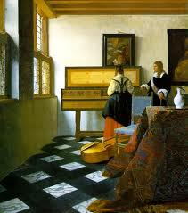

Working a Jigsaw
By Barbara Shoup
The sky is icy blue. The line of trees across the meadow seem engraved on it, their charcoal trunks dark against the snow, their branches hazy, as if the artist has not yet brushed away the dust made by his burin. I look at this peaceful scene from inside the cabin, where I have come to work. The wood stove burns brightly. A whole week stretches before me, nothing to do in it but write, read, think. I packed everything I could imagine I might need: books, notebooks, computer, printer, paper, pens, letters to answer. As an afterthought, I brought along a puzzle.
Unpacking it, I remember driving the “Black and White Trail” of Tudor villages to Hay-on-Wye, just over the border of Wales. There, my friend and I spent the better part of a morning wandering in and out of musty-smelling shops, each with long, narrow aisles of books shelved floor to ceiling. We browsed rickety shelves of battered paperbacks that ran the length of a winding lane, with a collection box at each end beneath a sign that read: “Honesty Book Shop, All Books 50 Pence, Money Into Letterbox Opposite Please”. It was an enjoyable morning, but a little disappointing. The village was full of tourists, much more commercial than we’d thought it would be. We laughed when we came upon the toy and puzzle shop; it seemed so obviously placed there in the hope that parents who had dragged their bored-to-tears children from bookshop to bookshop might spring for an expensive new toy to appease them. There were wonderful teddy bears, trains, dolls, blocks, balls, and bright modern picture books inside. And puzzles. Hundreds of them. The ones toward the front of the store were children’s puzzles; but the entire back room was lined with art puzzles. The effect was rather like a cluttered, scaled-down museum. Renoir, Monet, Turner, Rembrandt, Rubens. Vermeer: “A Lady at the Virginals with a Gentleman.”
Owned by Queen Elizabeth and rarely exhibited, this was a Vermeer painting that I’d never seen in the original; but I’d looked at prints of it many times and always found it deeply pleasing. Even a picture on the top of a puzzle box reveals that it is one of the artist’s most beautiful works. In it, a woman wearing a vivid red skirt stands at a harpsichord, her back to the viewer, a honey-colored cello abandoned at her feet. To the right, between the harpsichord and a framed portrait that is cut off by the canvas’s edge, a man dressed in black--perhaps Vermeer himself, watches her, his elegant hand resting on a cane. Just behind her, the ubiquitous blue chair with the lion’s head finials is placed at a slant, facing outward. In the foreground, there is a square table covered by a rich Persian rug, a white porcelain jug set on a silver tray upon it. Light pours in from the mullioned window on the left. The placement of table, chair, and cello creates a kind of barrier, protecting the man and woman in this private moment; but the framed mirror above the harpsichord reveals the woman’s interest in her companion. This intimate detail and the glimpse of an easel at the top right complicate Vermeer’s almost too careful composition, turns the world of the painting inside out.
“Remember me,” he seems to be saying. “I made this.”
I hadn’t worked a puzzle since I was a child, and I hadn’t much liked doing it then. It seemed like an absurd activity for an adult. I bought the Vermeer puzzle simply because I couldn’t quit looking at the beautiful picture on the box. When I got home from the trip, I put it on a shelf in my office and forgot about it. Every now and then, I’d look at the picture and think again how lovely it was, and how strange the way looking at the top of a puzzle box could make me feel so still inside. I happened upon it again, gathering things for this week of solitude. Why not take it along, I thought? Maybe I’ll work on it when I need to take a break.
But when I open the cellophane package of puzzle pieces and spill them out on the kitchen table, I cannot not imagine that I will have patience to put them together. There are so many of them, and each one so small. Then I notice a gold piece with scrolling on it, recognize it as part of the instrument Vermeer’s woman plays. I see another piece of it, and another. I’m surprised at the chord of satisfaction that resonates inside me when these pieces interlock. I can’t resist searching out another, then another to fill the gap between that one and the three that made the virginals start to emerge. And, oh!, there’s a buttery yellow piece, with orange faint orange markings: one of the letters on the raised lid of the instrument. When I look up from the table, all the letters finally in place, an hour has passed. More time passes as I browse through a book about Vermeer’s work to learn what, translated, the letters spell. “Music is the the companion of joy, the medicine for grief.”
In the next days, I cannot go past the table without stopping to examine the puzzle there. I am mesmerized by the task of fitting the pieces together. I look at each piece carefully. I look at its shape, its markings. Is there any clue in it to the whole? A dash of orange, a thin green line, a silver curve? An eye, a fret, a finger? Usually, there is not. Usually each piece seems much like any number of other pieces I pick up--and at the same time maddeningly unique. Hours and hours I meant to spend writing pass as I stand staring at the picture of the painting, then at some section of the puzzle I am trying to complete.
I imagine Vermeer staring at the scene, fine-tuning it. He places the table, the cello, the pitcher, the mirror, the rug, the harpsichord, the chair just so. He directs the man closer, then farther from the instrument. He turns the woman’s face this way, then that with the palm of his hand. At last, every little thing seems to him in harmony with the immutable angles and patterns in the floor, the roof beams, the walls, the windows, and he steps out of the picture and begins to paint.
Color against color: I once read that that was how he accomplished his magical effect. Vermeer saw with the pure eye of a child. He did not see objects, rather he saw the way the myriad of colors that any one object was made of lay, one against another, on a plane. In a sense, he built a painting with color: a process not so different than putting together a jigsaw puzzle, I think--until I look at the palette of puzzle pieces for the luminous colors I see in the painting before me. There are a few yellow pieces, a few solidly red ones. But the majority of pieces are some dull, unlikely mix of colors or, worse, no apparent color at all. Three bright dots on one piece look like upholstery tacks and tell me that it probably makes up part of the blue chair. But how? The puzzle piece they’re on does not seem at all blue to me, rather a kind of steel gray. Yet when I fit it against another piece with similar dots, blue emerges as surely and suddenly as if a chemical reaction had occurred. Another series of what seem to be gray pieces make a long, dark red fold in the woman’s skirt.
The complications of the exercise grow deeper. Sometimes, fingering the pieces in the box, staring at the pieces I’ve organized on the table by color tone or some other identifying element, I think, surely, there must be some pieces missing. There don’t seem to be enough of the blue-gray pieces to make the chair, for instance. I’m certain of a shortage when I notice a second blue chair in the background, against the wall. But, remembering my earlier lesson, I concentrate on each piece and how it fits against its mates. I find the gold dots, the upholstery tacks, on a few dark pieces and I put them together, waiting for the moment they will transform before my eyes. This time, however, the magic effect does not occur. No matter how I look at it, this chair is not blue. But I saw blue when I noticed it; I see blue now when I step away. Is this because I recognize the chair as the same blue chair Vermeer painted again and again; or would I have registered blue if I had looked at the chair never having heard of Vermeer or seen his work before this moment? Did the artist somehow suggest blue? Is that possible?
There is something in the way I have to look from the puzzle to the painting and back to the puzzle again that is teaching me about the way Vermeer carried information from his eye to the brush. As I must look at the pieces one at a time to complete the puzzle, so he painted the picture by looking at it spot by spot. Looking at the painting the way the puzzle demands of me, I see that, in isolation, no color is as it appears in the whole. The pieces that make the shadowy gray wall beneath the window are green. Some of the black tile pieces are green, too. Some are charcoal. The white tiles aren’t white at all, but gray swirled with gray. The pieces that make the silver plate beneath the white jug are black and white, with an effect rather like magnified newsprint.
And the light. If I am confounded by how Vermeer made these vivid objects out of what seems like no true color at all, how can I ever hope to understand how he painted the golden light seeping in through the window? If I hold two puzzle pieces in my hand--one from the most luminous section of the wall, and another from the section near the mirror, where the light has begun to fade--I can see that they are completely different colors, different shades of beige. Yet looking at the place between these two sections, and at each of the pieces that make that place, I can’t see where the light begin to change.
I look harder, but the essence of light simply will not reveal itself to me. I have an odd thought then. What if it never revealed itself to Vermeer either? What if it felt like failure to him to accept that seeing the way light lay against not-light was as close as he would ever come to defining it, that luminousness was some trick of the earth itself, from which both the painter and the paints were made?
My poor, strained eyes go bleary, looking. I stare at the black and white tiles in the painting and see the black and white Tudor villages we passed through to get to the village in Wales where I bought the puzzle that I am working, here in this quiet place. I see us driving away from Hay-on-Wye that afternoon, up, up into the Welsh hills. The narrow lane winds through dense forest, then fields of waist-high ferns, suddenly giving way to a flat, bald, expanse of green so vast, so foreign in its effect that we cannot comprehend what we see. Light spills from the sky. Sheep rest stubbornly in the middle of the road. White horses graze. One comes so close to our parked car that my friend reaches out and touches its face, and at that moment I cannot imagine wanting to be in any other place or time. I feel exactly as I once felt in the Mauritshaus Museum, standing before Vermeer’s “View of Delft”. I must remember this, I think, and I scribble words into my notebook: black ink on a white page.
Just as, now, I am typing these black words onto the white screen. Am I working? I am not doing the work I planned to do. I am working a puzzle, looking hard at a painting in order to put each piece in its place, and, from time to time, I am writing down facts and memories and odd insights that float up, pieces of another, bigger puzzle. This puzzle has no picture on its box to help me, though. Just pieces. And with fuzzy, undefined edges, at that. A green hilltop in Wales. Sixteenth century Delft. A still-unwritten character in my head who is as real, as vivid as the photograph of the little girls that my daughters once were, sitting on my desk.
I look up, look beyond the words and the puzzle to the winter scene outside my window, and the whole world fractures. The window frame dissolves to a kind of bargello, brown on brown. The braided cord of the Venetian blind is no more than a simple red line, hatched with bright, whitened-red, and outlined in a thread of pure white. The push pin holding the cord in place is a dot of white, a half-moon of lemon-yellow, a slice of duller yellow mixed with black. Outside, the snow falling is a swirling tapestry of silver, white, and gray.
Valéry said, “Seeing is forgetting the name of the thing one sees.” A jotting from my notebook finds its place. I am seeing as Vermeer saw. If I could look long enough, if my hand were steady enough, if only I understood the properties of paint, I could make a world as he did. My world. Sky, snow, trees. Window, chair, desk. Words on a screen. They are all there, in pieces before me. I would only have to be patient enough to put them together.
But it would take so long. Even this puzzle picture builds so slowly beneath my fingers: Vermeer’s beautiful image made of hundreds of moments of paint. Sometimes I look at a piece for what seems like forever, trying it in every single empty space left in the puzzle, and ultimately have to set it aside because I cannot make it fit in any of them. Occasionally, I pick up a piece and see immediately where it should go. Sometimes, placing one piece, it becomes obvious where a number of others will fit around it. The hardest part of all is the Persian rug on the table. The pieces are so impossibly similar that I can only work when the late afternoon light falls across the table a certain way, illuminating them. Even so, more than once, a piece only seems to fit, and when I realize this, many pieces later, I must take the whole section out and do it over. It comforts me in my discouragement to remember the X-rays that show how Vermeer himself reworked the position of the man, the girl’s head, the lid of the harpsichord, the neck of the pitcher.
The exercise seems so pointless and impossible at times, a bad investment of more hours than I care to count. This is ridiculous, addictive behavior, I tell myself. Stop, cut your losses, do what you came here to do. Then a pieces falls into its right place and I see, suddenly, the corner where the line of roof timbers meets the window casing, or the man’s face, or the crisscross pattern on the back of the woman’s gown, and I feel some small measure of what I am certain Vermeer felt the moment when, after a long patience, the small slice of the world he was looking at yielded to his brush.
And I go on.
Finished on the last day of my solitude, the puzzle seems a work of art in its own right. The colors are luminous, the pattern of pieces effects a kind of craquelature on the surface, and, at that moment, I am as pleased as the Queen herself must be to own something so beautiful. The puzzle becomes a piece of my life. An object. A week in time. The ghost of an unwritten story. And this snippet of understanding: every beautiful thing is made of many pieces, each one complete in its own way, utterly, maddeningly, gloriously itself.
© Barbara Shoup 2012